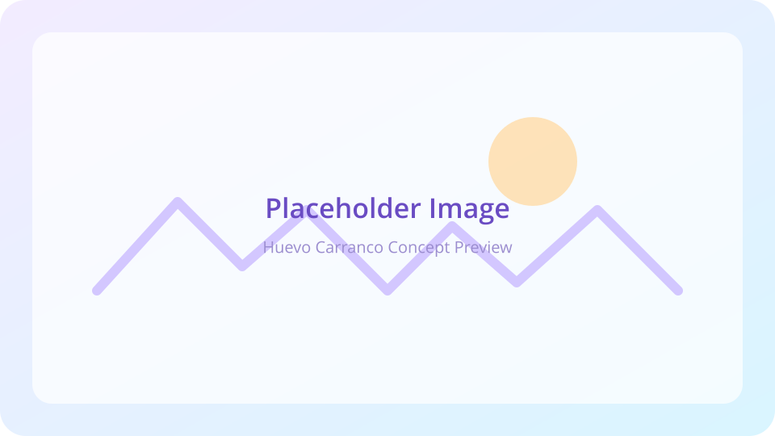

Huevo Carranco is a free-range, agroecological egg brand that wanted an identity capable of communicating natural origin, freedom, and artisanal production. The client needed more than a logo—they needed a cohesive visual ecosystem grounded in the experience of pasture-raised hens and the warmth of rural Mexico.
My goal as brand designer and illustrator was to craft visuals that felt hand-made, ecological, and rooted in the farm experience, while still delivering a structured, scalable system for packaging and communications.
⸻
The project began with discovery sessions focused on understanding the client’s world: pasture-raised hens, natural feeding, and a philosophy rooted in organic, unprocessed production.
I researched visual territories connected to:
The inspiration board (PDF p.2) organized references around these ideas, guiding the artistic direction toward warm, earthy, familiar imagery.

⸻
The first visual explorations were full-page hand-drawn scenes—hens, crops, barns, fences, and mountains illustrated in a rustic, free-flowing style to capture the essence of libre pastoreo.
The first illustration (PDF p.1) shows the hen standing proudly over a natural landscape, a defining image that established the narrative tone.
These sketches set the brand personality:
This illustration style became a core pillar of the identity.
⸻
During early discovery (PDF p.3), I synthesized the brand essence through word associations that linked visual cues to strategic pillars:
These conceptual anchors guided every stroke, shape, and color decision. I illustrated hens, eggs, fields, mountains, and rural elements to build a visual ecosystem ready for packaging, labels, and digital uses.
Using the illustration-first approach, I designed logo compositions that blended drawing, lettering, and rural storytelling.
In the first proposal round (PDF p.4) I explored:
Option A – a farm fence, mountains, sun, and clouds forming a scenic badge around the hen.
Option B – cultivated fields with a cleaner horizon line emphasizing agroecological cultivation.
Option C – plants, mountains, and simplified scenery for a more rustic personality.
A second variation round (PDF p.5) refined the landscapes with negative-space grass, barn details, planted fields in solid shapes, and more expressive hen proportions. The iterations improved clarity while preserving the artisanal feeling.
⸻
The second PDF (Brand Logo) documents the polished identity.
The final logo (PDF p.1) preserves the handmade aesthetic, farm scenery, dual hens standing over eggs, and a rounded badge shape for versatility.
An earthy yet fresh palette (PDF p.4) composed of coffee brown (base), light blue highlights, neutral beige and gray, plus a warm egg-yolk accent for energy.
The typographic pairing (PDF p.6) combines Open Sans for clarity, Stick-A-Round for feature lettering, and Matita & Harimau as expressive display fonts—balancing readability with handmade character.
⸻
A conceptual packaging mockup (PDF p.3, p.4) demonstrates how the illustrated logo and palette translate to a cardboard egg carton:
The mockup shows how illustration elevates a simple product into a memorable, emotionally resonant brand moment.
This project highlights the power of illustration-led branding—a visual identity built not from digital polish but from warmth, personality, and human touch.
Through research, hand-drawn exploration, lettering, and systematic refinement, Huevo Carranco evolved into a brand with authentic narrative presence, rooted in nature and tradition, and supported by a scalable system.
It let me combine my UX mindset with my illustration practice, crafting not just a logo but a story grounded in rural simplicity and ecological care.